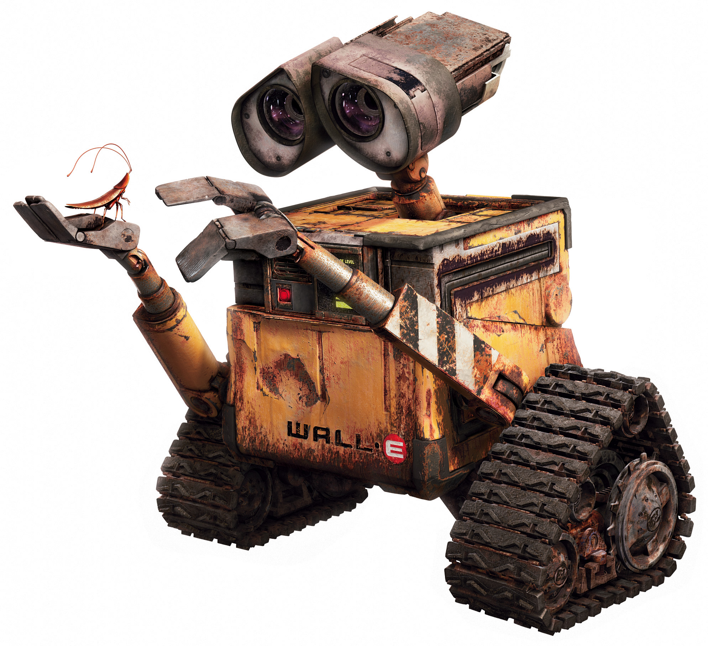

Hi. I'm Kreme the Donut and today I'm going to tell you about robots.
A robot is a machine capable of carrying out a complex series of actions automatically, especially one programmable by a computer. In English that means a machine that can be programmed to do things. But there are many things that are robots, most you won't expect!
There are many types of robots, and here are just a few.
1. Cartesian robot /Gantry robot: Used for pick and place work, application of sealant, assembly operations, handling machine tools and arc welding. It's a robot whose arm has three prismatic joints, whose axes are coincident with a Cartesian coordinator.
2. Cylindrical robot: Used for assembly operations, handling at machine tools, spot welding, and handling at diecasting machines. It's a robot whose axes form a cylindrical coordinate system.